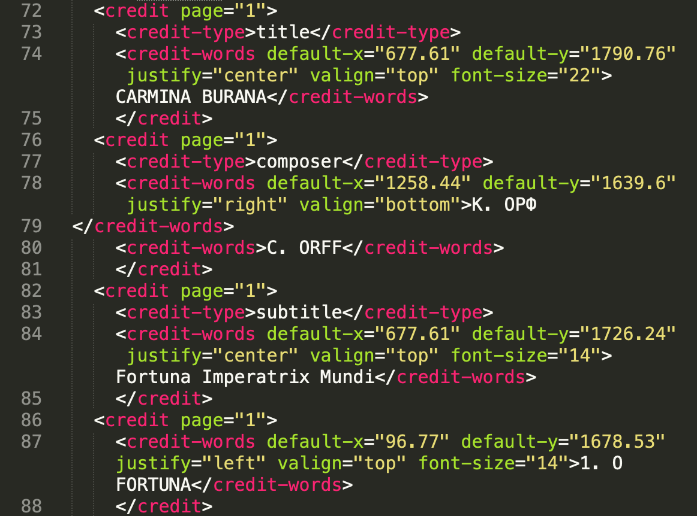
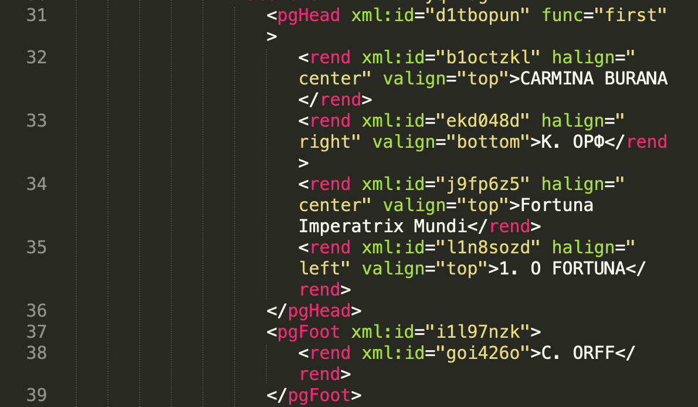
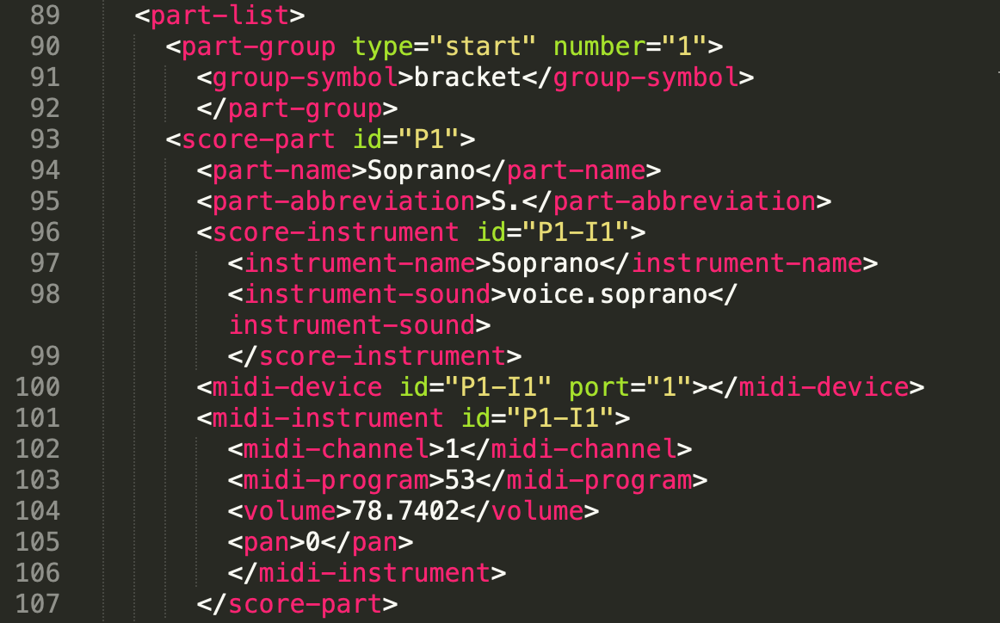
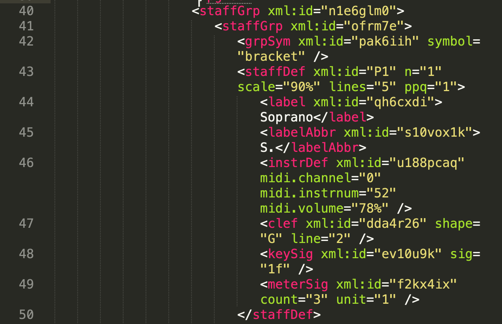
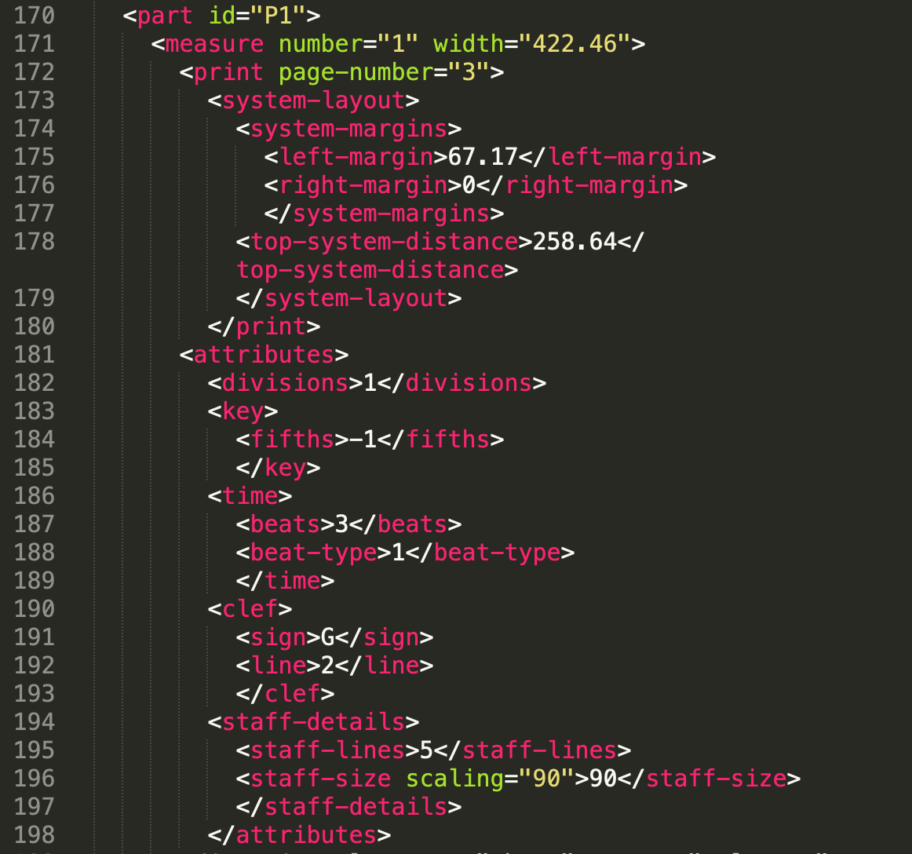
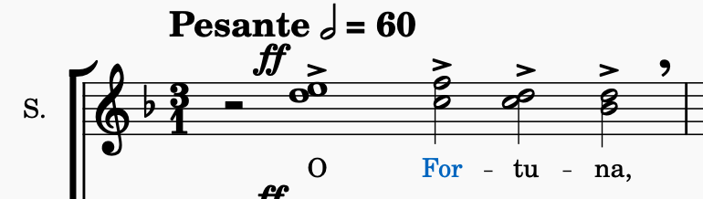
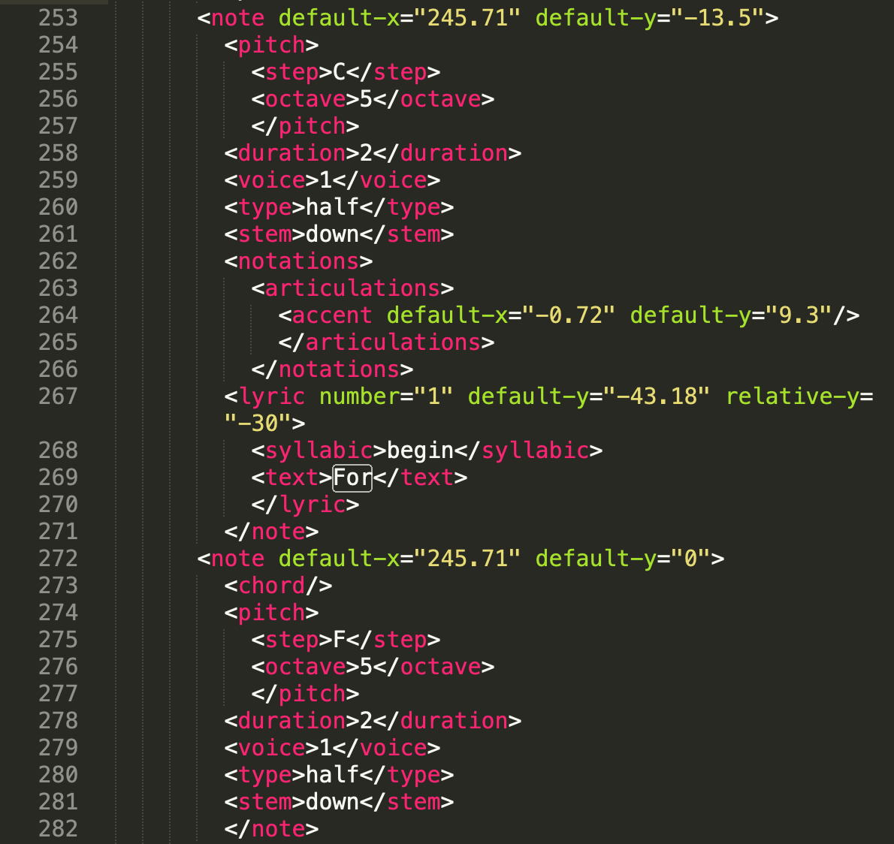
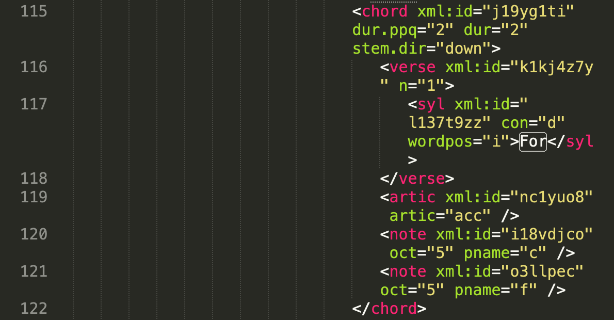

Task 2: Compare 3 XML elements in the MusicXML file to the corresponding ones in MEI. ... Think about: which attributes can be employed in each standard, which parents and children can be used, and try to think of the implications of these differences.
Element 1: metadata about the music piece (title, author, etc.)
Information about the piece title, composer, and part name is clearly labelled in the *.musicxml file through the use of the child elements of the element <credit> (<credit-type>title</credit-type>, <credit-type>composer</credit-type>, etc.), but in .mei they are just <rend> elements with the parent element <pgHead>. This is quite surprising, since the MEI standard is supposed to be more academic and research-oriented, but such basic information has been left unclassified. Moreover, the score that I digitised had the name of the composer given in two languages, and the second line, containing the name in Latin script, went into another element, <pgFoot>, and is not visible on the page rendered by Verovio. That also means that this metadata cannot be properly parsed from the *.mei file.

Credits in *.musicxml

Credits in *.mei
Element 2: Parts definition
Information about vocal parts and instruments presented in the score is encoded differently in these two standards. I will compare how the 'Soprano' voice is encoded in both of them.
*.musicxml has a dedicated element <part-list>> the child <score-part id="P1"> of which contains nested elements related to Soprano (<instrument-name>, <instrument-sound> + info about MIDI realisation of this voice). *.mei encodes this information through the <staffDef> element, which has nested elements <label> (Soprano) as well as other important music data related to that part - clef, key signature and time signature (<clef>, <keySig>, and <meterSig>, respectively). *.musicxml holds this information in a separate element <part id="P1"> (which corresponds to id="P1" of a <score-part> element), among whose children are <key>, <time>, and <clef>.
On the one hand, having this information inside one element, as in MEI, is convenient - this option is more human-readable. On the other hand, O Fortuna is a great example where clefs and time signatures change after the first few bars, so that is not some constant characteristic of a voice/instrument and there is its own logic of having that next to the relevant notes, not in the initial description of voices/instruments.

Part definition in *.musicxml

Part definition in *.mei

Information about clef, key signature and time signature in *.musicxml
Element 3: Chords, notes and associated lyrics
Here I will compare how the notes associated with the 'For-' syllable of the lyrics and the corresponding chord in the first bar of the piece are represented in both standards.
In MusicXML, the chord is represented as two successive <note> elements. Each element contains sub-elements describing pitch and duration, and contains information regarding the appearance of the note on the page (the stem is directed down). The first of the <note> elements also has a <lyric> sub-element with its own nested elements with syllabic position and the syllable itself. If we take this element alone, we have no means of determining that this note is part of a chord. The second note element, in turn, signifies that it belongs to a chord (it has a nested <chord/> element), but it does not provide any information about whether it has any associated lyrics. To find that out, we have to return to the previous note.
MEI format is much more human-readable, as we have already seen. Separate notes are child elements of the parent <chord> element, and lyrics are given as yet another child element (<verse>).

Syllable 'For-' in MuseScore 4 and the corresponding chord.

Syllable 'For-' in MusicXML and the corresponding chord.

Syllable 'For-' in MEI and the corresponding chord.
If we bring this all together, it seems that the MEI standard is designed to be very 'user-friendly' and human-readable, and reading a *.mei-file resembles reading a music score. On the other hand, if we are not gathering information for our research from XML manually (which is actually the reason for encoding music in a variety of XML standards), it is not such a big advantage. Elements in MusicXML, since they are not nested, are probably more convenient for an algorithmic analysis because they can be accessed one by one and not as a group.